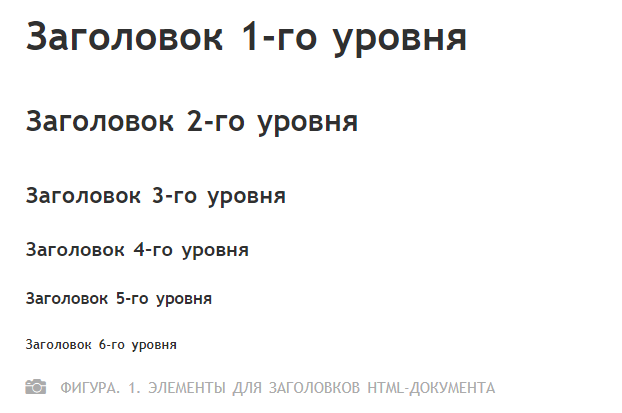

Практическая работа №2
HTML-текст
HTML-текст представлен в спецификации элементами для форматирования и группировки текста. Данные элементы являются контейнерами для текста и не имеют визуального отображения.
Элементы для форматирования текста несут смысловую нагрузку и обычно задают для текста, заключенного внутрь, стилевое оформление, например, выделяют текст жирным начертанием или отображают его шрифтом другого семейства (свойство font-family).
Грамотно отформатированный текст дает понять поисковым системам, какие слова несут важную смысловую нагрузку, по каким из них предпочтительно ранжировать веб-страницу в поисковой выдаче. Вся текстовая информация, отображаемая на сайте, размещается внутри элемента <body>.
Заголовки являются важными элементами веб-страницы, они упорядочивают текст, формируя его визуальную структуру. Элементы <h1>...<h6> должны использоваться только для выделения заголовков нового раздела или подраздела.
При использовании заголовков необходимо учитывать их иерархию, т.е. за <h1> должен следовать <h2> и т.д. Также не рекомендуется вкладывать в заголовки другие элементы.
Элемент <h1>
Заголовок самого верхнего уровня, на странице рекомендуется использовать только один раз, по возможности частично дублируя заглавие страницы. Элемент <h1> должен быть уникальным для каждой страницы сайта.
Рекомендуется прописывать в начале статьи, используя ключевое слово в тексте заголовка. Размер шрифта в браузере равен 2em, верхний и нижний отступ по умолчанию 0.67em.
Элемент <h2>Представляет подзаголовки элемента <h2>. Размер шрифта в браузере равен 1.5em, верхний и нижний отступ по умолчанию 0.83em.
Элемент <h3>Показывает подзаголовки элемента <h2>. Размер шрифта в браузере равен 1.17em, верхний и нижний отступ по умолчанию 1em.
Элементы <h4>, <h5>, <h6>Обозначают подзаголовки четвёртого, пятого и шестого уровня. Размер шрифта в браузере равен 1em / 0.83em / 0.67em, верхний и нижний отступ по умолчанию 1.33em / 1.67em / 2.33em соответственно.
Для всех элементов доступны глобальные атрибуты.
Элементы для форматирования текста
Элемент <b>Задаёт полужирное начертания шрифта. Выделяет текст без акцента на его важность.
Элемент <em>Отображает шрифт курсивом, придавая тексту значимость.
Для элемента доступны глобальные атрибуты.
Элемент <i>Отображает шрифт курсивом.
Для элемента доступны глобальные атрибуты.
Элемент <small>Уменьшает размер шрифта на единицу по отношению к обычному тексту.
Для элемента доступны глобальные атрибуты.
Элемент <strong>Задаёт полужирное начертание шрифта, относится к элементам логической разметки, указывая браузеру на важность текста.
Для элемента доступны глобальные атрибуты.
Элемент <sub>Используется для создания нижних индексов. Сдвигает текст ниже уровня строки, уменьшая его размер.
Для элемента доступны глобальные атрибуты.
Элемент <sup>Используется для создания степеней. Сдвигает текст выше уровня строки, уменьшая его размер.
Для элемента доступны глобальные атрибуты.
Элемент <ins>Выделяет текст в новой версии документа, подчёркивая его.
Для элемента доступны атрибуты cite и datetime.
Элемент <del>Перечёркивает текст. Используется для выделения текста, удаленного из документа.
Для элемента доступны атрибуты cite и datetime.
Элемент <mark>Применяется для выделения фрагментов текста в справочных целях, окрашивая блок символов желтым цветом.
Для элемента доступны глобальные атрибуты.
Элементы для ввода «компьютерного» текста
Элемент <code>Служит для выделения фрагментов программного кода. Отображает текст моноширинным шрифтом.
Для элемента доступны глобальные атрибуты.
Элемент <kbd>Отмечает фрагмент как вводимый пользователем с клавиатуры. Отображает текст моноширинным шрифтом.
Для элемента доступны глобальные атрибуты.
Элемент <samp>Применяется для выделения результата, полученного в ходе выполнения программы. Отображает текст моноширинным шрифтом.
Для элемента доступны глобальные атрибуты.
Элемент <var>Выделяет имена переменных, отображая текст курсивом.
Для элемента доступны глобальные атрибуты.
Элемент <pre>Позволяет вывести текст на экран, сохранив изначальное форматирование. Пробелы и переносы строк при этом не удаляются.
Для элемента доступны глобальные атрибуты.
Элементы для оформления цитат и определений
Элемент <abbr>Применяется для форматирования аббревиатур. Браузером обычно подчеркивается пунктирной линией. Расшифровка сокращения осуществляется с помощью атрибута title, она появляется при наведении курсора мыши на текст.
Для элемента доступны глобальные атрибуты.
Элемент <bdo>Используется для изменения текущего направления текста.
Для элемента доступен атрибут dir
Элемент <blockquote>Выделяет цитаты внутри документа, выделяя его отступами и переносами строк.
Для элемента доступен атрибут cite
Элемент <q>Используется для выделения коротких цитат. Браузерами заключается в кавычки.
Для элемента доступен атрибут cite
Элемент <cite>Применяется для выделения цитат, названий произведений, сносок на другие документы.
Для элемента доступны глобальные атрибуты.
Элемент <dfn>Позволяет выделить текст как определение. Несмотря на наличие данного элемента, рекомендуется выделять текст силами CSS.
Для элемента доступен атрибут title
Абзацы, средства переноса текста
Элемент <p>Разбивает текст на отдельные абзацы, отделяя друг от друга пустой строкой. Браузер автоматически добавляет верхнее и нижнее внешнее поле margin, равное 1em, при этом поля соседних абзацев «схлопываются».
Для элемента доступны глобальные атрибуты.
Элемент <br>Переносит текст на следующую строку, создавая разрыв строки.
Для элемента доступны глобальные атрибуты.
Элемент <hr>Используется для разделения контента на веб-странице. Отображается в виде горизонтальной линии.
Для элемента доступны глобальные атрибуты.
Наверх